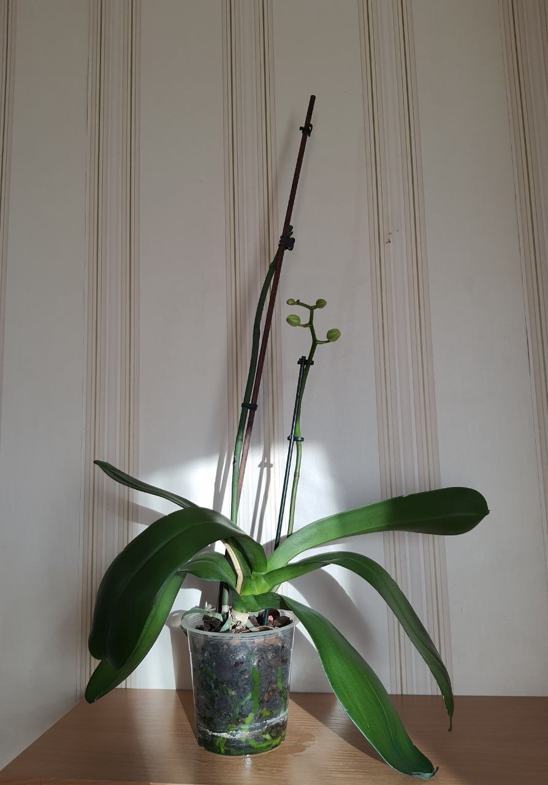

History
З них то все і почалось =)
Information
Згодом...
Орхідея (Біла)
Моя найперша орхідея. Подарунок на День народження (25.02.20)
25.02.20
Дуже великим здивуванням було те, що...Коли вона розквітла вдруге, то стала не синього кольору, а білого (16.07.20)
Квіти просто неймовірні (09.01.22)
День, коли після початку війни нарешті остаточно повернулась в Київ.
Почала приводити всі свої рослинки в порядок, і помітила що росте нове стебло.
Це завжди велика радість. Значить орхідея гарно себе почуває, і скоро буде квітнути (01.05.22)

Все ще чекаю на нові квіти (24.06.22)
Орхідея (Дєтка)
В цей день я дізналась про бічні стеблові пагони у орхідей - це дітки.
З часом їх зрізають та висаджують в горщик окремо (03.06.21)
Пройшов майже рік. В Дєтки виросло хороше коріння (мабуть, не знаю, вперше проходжу через це), та великі листи,
тому я вирішила відділити її від материнського стебла (11.06.22)
Вітаємо малюка в новому горщику =) (11.06.22)
24.06.22
Орхідея (Фіолетова)
Моя найстарша орхідея. За нею потрібен особливий догляд.
Але моя некомпетентність призвела до того, що майже все її коріння згнило...
Першою помилкою була пересадка в темний горщик, в якому коріння не мало доступу до сонця. А також надмірний полив...
Цього дня мені довелося обрізати майже все коріння, щоб якось врятувати її. Але на цьому фото вже видно, що вона бореться і
починає нарощувати новий корінь... (10.06.22)
Такий вигляд має. Трохи ще знесилена (24.06.22)
Але нарощує бутони! (24.06.22)
І вже через кілька днів порадувала мене цвітінням =) (27.06.22)
Просто прекрасна (27.06.22)
Орхідея (Рожева)
А цю крихітку я отримала на День народження цього року =)
Вона одна з усіх моїх вазонів має особисте ім'я - "Джулія". Бо асоціюється в мене з такою ж ніжною дівчинкою. (08.06.22)
08.06.22
Намагаюсь знайти до неї підхід. Бо щось її не влаштовує в моєму догляді. Трішки скинула верхні квіти... (24.06.22)